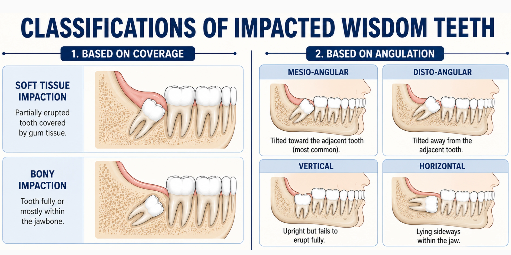

Introduction
Wisdom teeth are the last molars to erupt, typically appearing in the late teens or early twenties, and while they are a natural part of dental development, they often lack enough space to erupt properly, which can lead to pain, crowding, or impaction.
While some individuals experience no issues, others may develop symptoms such as swelling or discomfort as these teeth erupt, making it important to understand when wisdom teeth are harmless and when they may require treatment. This guide explains the symptoms, risks, and treatment options, including when wisdom tooth removal may be needed.
What Are Wisdom Teeth and Why Do We Have Them?
Wisdom teeth, also known as third molars, are the set of molars located at the very back of the mouth. Most people have four wisdom teeth—one in each corner—though some may have fewer or none.
They are the final permanent teeth in the mouth and are part of normal dental development. In some individuals, they erupt fully and align properly, while in others they may remain partially covered by gum or fail to erupt.
In early human history, these teeth were useful for chewing tough, unprocessed foods that required more grinding power. However, as diets became softer and human jaw size gradually reduced over time, these extra molars became less essential.
At What Age Do Wisdom Teeth Usually Appear?
Wisdom teeth usually appear between the ages of 17 and 25 years, although the timing can vary from person to person.
In some individuals, they erupt early in the late teens, while in others they may appear later in the mid-twenties or remain completely unerupted.
Because they erupt after most other permanent teeth have already aligned, there is often limited space available in the jaw for proper eruption.
Common Signs and Symptoms of Wisdom Teeth Problems
Wisdom teeth do not always cause symptoms, but when problems develop, discomfort usually appears gradually.
Common signs include:
- Pain at the back of the mouth
- Swollen or tender gums
- Difficulty opening the mouth
- Bad breath or unpleasant taste
- Food trapping near the tooth
- Swelling in the jaw or cheek
If symptoms persist, a dental examination is recommended.
For practical ways to manage wisdom tooth pain at home, read: How to Relieve Wisdom Tooth Pain at Home: Temporary Measures That May HelpWhat Is an Impacted Wisdom Tooth?

An impacted wisdom tooth is a third molar that does not have enough space to erupt properly and remains partially or fully trapped in the gums or jawbone.
Impaction is classified as:
Based on coverage:
- Soft tissue impaction – partially erupted tooth covered by gum
- Bony impaction – tooth fully or mostly within the jawbone
Based on angulation:
- Mesio-angular – tilted toward adjacent tooth (most common)
- Disto-angular – tilted away from adjacent tooth
- Vertical – upright but fails to erupt fully
- Horizontal – lying sideways in the jaw
Management depends on the type, position, and depth of impaction.
Causes of Wisdom Teeth Impaction
Wisdom tooth impaction can occur due to several factors, often working together.
Common causes include:
- Insufficient space in the jaw
- Improper angulation of the tooth
- Obstruction from adjacent teeth
- Delayed or abnormal eruption pattern
- Genetic factors affecting jaw size and tooth positioning
What Problems Can Impacted Wisdom Teeth Cause If Left Untreated?
Impacted wisdom teeth can lead to several oral health problems if left untreated.
Possible complications include:
- Pain due to infection or pressure on surrounding teeth
- Difficulty in opening the mouth due to inflammation or jaw stiffness
- Headache caused by referred pain or muscle strain
- Gum infection around the partially erupted tooth (pericoronitis)
- Tooth decay due to difficulty in cleaning the area
- Damage or pressure on nearby teeth
- Shifting or crowding of surrounding teeth in some cases
- Cyst formation around the impacted tooth (rare but serious)
These problems may develop gradually and often worsen if the impacted tooth is not monitored or treated in time.
How Are Wisdom Teeth Problems Diagnosed?
Wisdom tooth problems are diagnosed using a combination of clinical examination and dental imaging:
- The dentist examines the mouth to check the position of the wisdom tooth
- Gums are assessed for signs of infection or inflammation
- Oral hygiene and food trapping around the area are evaluated
- A panoramic X-ray (OPG) is taken to view the tooth position and angle
- The available space in the jaw is assessed
- Relationship with nearby teeth and bone structures is checked
- The dentist evaluates whether the tooth can be monitored or may require treatment
Can Wisdom Teeth Be Left Alone If They Are Not Causing Problems?
Yes, wisdom teeth can often be left in place if they are healthy and fully erupted without causing any issues.
They do not usually require removal when:
- They are fully erupted and properly positioned
- They can be cleaned easily with regular brushing and flossing
- There is no pain, swelling, or infection
- They are not affecting nearby teeth
Even if they are not causing problems, regular dental check-ups are important to monitor their condition over time and detect any early changes.
When Is Wisdom Teeth Removal Necessary?
Wisdom tooth removal is considered when a tooth is causing problems or has a risk of future complications.
It may be recommended for:
- Pain, swelling, or infection
- Difficulty in cleaning due to partial eruption
- Damage to nearby teeth
- Decay or cyst formation
- Impacted teeth unlikely to erupt properly
Treatment may involve a simple extraction or a minor surgical procedure, depending on the tooth’s position.
What Happens During Wisdom Teeth Removal Surgery?
- An X-ray is taken to assess the position of the tooth
- Local anaesthesia is given to numb the area
- A small opening is made in the gum to access the tooth
- In some cases, the tooth is divided into smaller parts for easier removal
- The tooth is extracted carefully
- The area is cleaned to remove debris
- Stitches may be required
- Gauze is applied to control bleeding
Recovery After Wisdom Teeth Removal: What to Expect
- Mild pain and swelling are normal after anaesthesia wears off
- Swelling peaks on day 2–3 and then reduces gradually
- Minor bleeding may occur in the first 24 hours
- Temporary jaw stiffness is common
- Most patients resume routine in 3–5 days (simple cases)
- Full healing may take 1–2 weeks
Tips for Faster Healing After Wisdom Tooth Removal
- Bite gently on gauze to help control bleeding
- Apply ice packs during the first 24 hours to reduce swelling
- Eat soft, cool foods for the first few days
- Avoid using straws, smoking, and alcohol during healing
- Keep your head slightly elevated while resting
- Maintain gentle oral hygiene without disturbing the extraction site
- Take prescribed medications as directed
- Get adequate rest to support healing
Possible Risks and Complications of Wisdom Teeth Removal
- Dry socket (delayed healing due to loss of the protective blood clot)
- Jaw stiffness or difficulty opening the mouth
- Bruising of the cheek or jaw
- Infection at the extraction site (uncommon)
- Temporary numbness or tingling (rare)
- Delayed healing in some cases
- Rare reaction to anaesthesia
Conclusion
Wisdom teeth are a natural part of dental development, but they do not always erupt smoothly. While some people may never experience issues, others may develop problems such as pain, infection, or crowding when these teeth do not have enough space to grow properly.
Understanding the symptoms, risks, and treatment options helps in making timely and informed decisions. Regular dental check-ups play an important role in monitoring wisdom teeth and preventing complications before they become serious.
Disclaimer: This blog is for educational purposes and does not replace professional dental consultation.
FAQs About Wisdom Teeth and their Removal
References
- 1.National Center for Biotechnology Information. (n.d.). Wisdom teeth. In StatPearls.
- 2. Cleveland Clinic. (n.d.). Wisdom teeth.
- 3. Cleveland Clinic. (n.d.). Impacted wisdom teeth.
- 4. Mayo Clinic Staff. (n.d.). Wisdom teeth: Symptoms and causes. Mayo Clinic.
- 5. Healthline Media. (n.d.). Why do we have wisdom teeth?
- 6. National Health Service (NHS). (n.d.). Wisdom tooth removal.
- 7. American Association of Oral and Maxillofacial Surgeons. (2021). Wisdom teeth management.
Authored By
Dr. Trupthi Nagendra
BDS, PGCE (Endodontics)
A dentist and dental health educator committed to comprehensive oral care, with a focus on patient education and early intervention. She helps patients understand dental conditions clearly and make informed decisions for timely and appropriate treatment, aiming to maintain long-term oral health and natural teeth preservation.